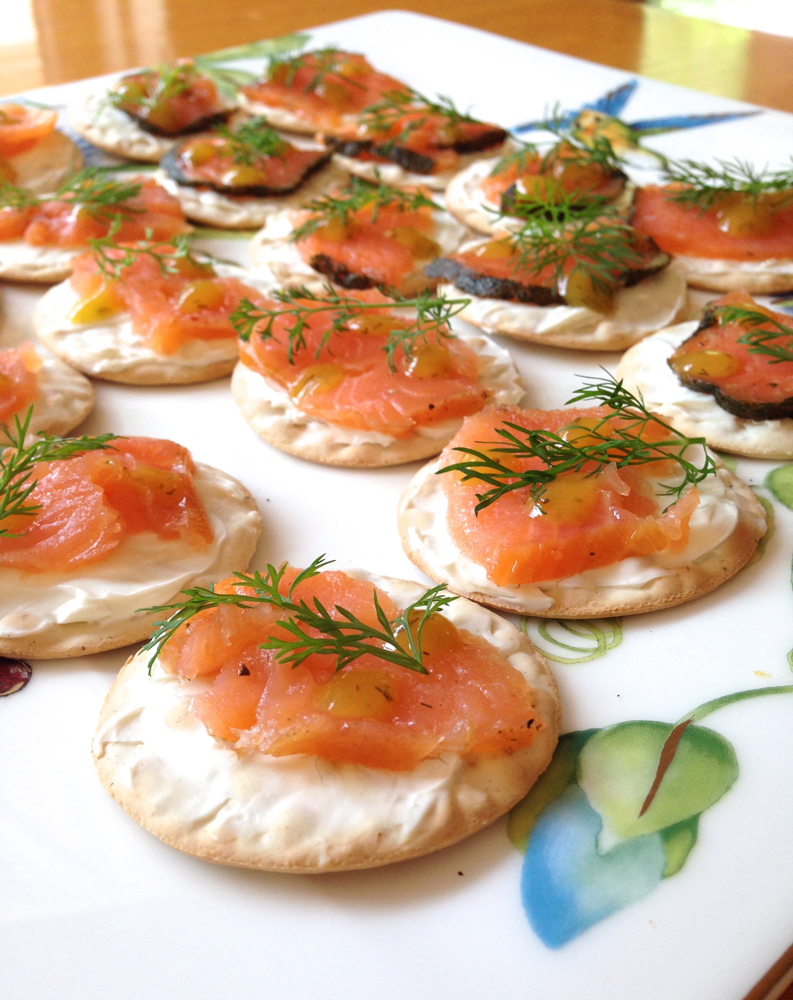

Cheese and Crackers for a god

This recipe is one of my personal favorites to munch on throughout the day, one that is quite salty but also has a fishy taste to it as well as a nice crunch from the crackers.
Ingredients
- Crackers, either a bougie brand or ritz works just fine
- A spreadable cheese, preferably brie
- Salmon Lox
- Dill stems for garnish
Directions, don't worry, its easy
- Spread your cheese on your crackers with a butter knife.
- Drop a few pieces of salmon on the cheese.
- Garnish that bad boy up with some dill.